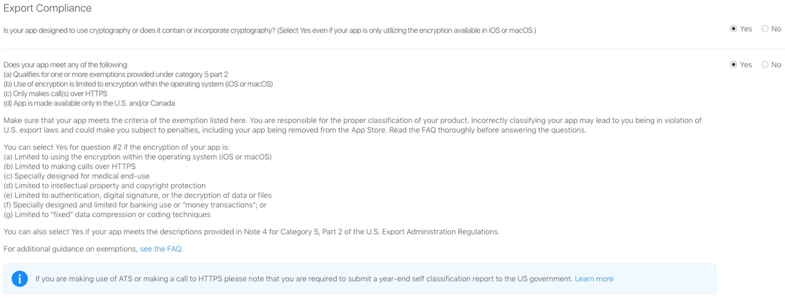

iTunes Connect Encryption Information
When submit out app to app store on iTunes connect, sometimes you will see it asking us to provide compliance information. When I sees that it asks me if my app uses any encryptions. I feel like no, my app is not using any encryption. I didn’t encrypt any of the file on disk etc. However, the iTunes connect warned me if I am making a call to HTTPS. What does that mean?
Only HTTPS
So what should we do if our app only call API though HTTPS? When submit app to review, it will ask you about Export Compliance questions. Answer it like this.

Choose the first question answer yes. Second question answer yes. Then it will allow you to submit the app without providing any encryption documentation. However, you do need to submit a year-end self classification report to the US government.
Info Keys
If you submit app to test flight for beta testers, you will have to provide compliance information for every build submitted. In order to avoid doing so, we can add following to app’s info.plist
1 | <key>ITSAppUsesNonExemptEncryption</key> |
Year-End Self Classification Report
I am not very clear about this report for now. This is a link that I found may be helpful to deal with that submit a year-end self classification report. I will update this section once I have experience to deal with this myself.
Reference
- Here is a reference on iTunes Connect Encryption Info
- Reporting App Encryption use to the US Government